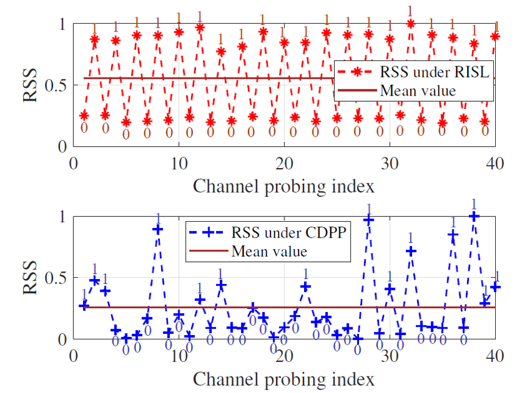
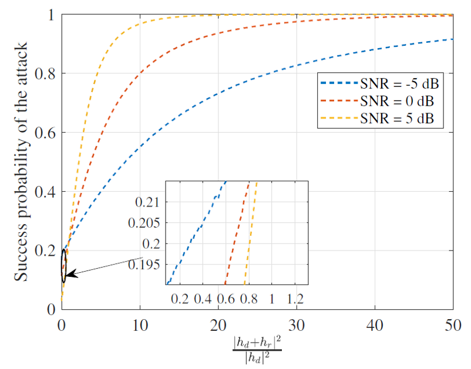

优秀论文
L. Hu, C. Sun, G. Li, A. Hu, and D.W.K.Ng, “Exploiting Malicious RIS for Secret Key Acquisition in Physical-layer Key Generation”, submitted to IEEE Wireless Commun. Lett., 2023. (Q1, IF=6.3)
研究进展
攻击目标在不破坏密钥一致性的前提下，获取Alice和Bob之间的密钥；攻击方法,在奇数轮和偶数轮信道探测中分别设置所有RIS反射系数为全0和全1； 合法者的RSS出现周期性的增强和减弱，造成密钥比特出现交替的0、1比特。
抵抗方法,基于动态私有导频的抵抗方法（CDPP）,通过增加信道的动态变化，减轻RIS对信道的控制作用；信道的变化不再仅取决于RIS反射矩阵，还和随机系数w有关，从而降低攻击效果。
1.下行信道探测：Alice发射探测信号，其为导频和人工随机系数w的乘积;
2.上行信道探测：Bob发送导频，Alice将接收信号与随机系数w 相乘得到。
仿真结果与分析
随着比值|ℎ_d+ℎ_r|^2/|ℎ_d|^2增大，RIS信道占整个信道的主要成分，则攻击成功率接近1；
随着噪声方差降低，当|ℎ_d+ℎ_r|^2/|ℎ_d|^2<1时，偶数轮的RSS很可能小于奇数轮，因此生成的比特与Eve预测的相反，攻击成功率降低；而当|ℎ_d+ℎ_r|^2/|ℎ_d|^2>1时，偶数轮的RSS很可能大于奇数轮，因此攻击成功率提高；